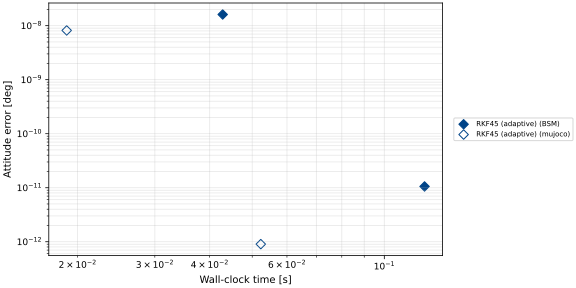
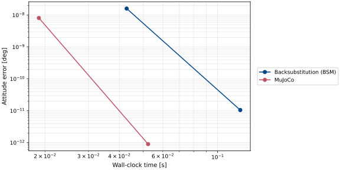
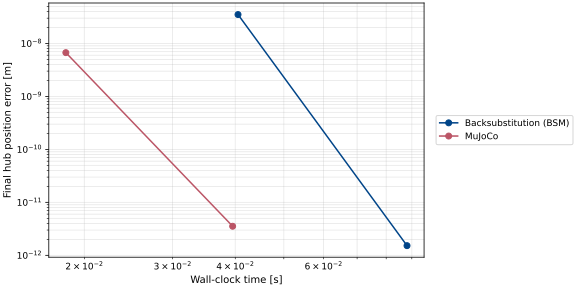

scenarioCompareParetoFlexPanels
Accuracy-versus-runtime Pareto study on a stability-limited, sixteen-segment flexible solar array (see scenarioCompareFlexPanels for the lumped-mass model and scenarioCompareParetoRwPanels for the companion study on a slower, well-resolved system).
This scenario repeats the work-precision (Pareto) sweep of
scenarioCompareParetoRwPanels on a harder problem: each solar array is discretized
into N = 16 rigid segments, giving 38 system degrees of freedom and a wide spread of
vibration frequencies. Damping is light (\(\zeta\approx0.01\)), so the
highest-frequency mode is oscillatory and sets a hard explicit stability limit on the
step size. The dynamics are stability-limited rather than classically stiff: a stiff
system has widely separated real eigenvalues and rewards implicit methods, whereas here
the fast eigenvalues are lightly damped complex pairs that must be resolved for phase
accuracy. The case stress-tests how each explicit integrator behaves near its stability
boundary.
Note
Basilisk’s svIntegrator system offers only explicit Runge-Kutta methods (Euler,
RK2, RK4, RKF45, RKF78), and MJScene is driven by the Basilisk
integrator, so MuJoCo’s implicit solvers are bypassed. This study characterizes the
explicit family only.
The sweep runs fixed-step integrators (RK2, RK4) over a range of time steps and adaptive integrators (RKF45, RKF78) over a range of tolerances, measures the wall-clock time and the final attitude error (principal angle of the relative direction cosine matrix against a per-engine tight reference), and assembles a Pareto front.
Two effects dominate the result:
Fixed-step integrators are stability-bound, not accuracy-bound. Once the step is small enough to be stable, a high-order method is already very accurate, so the usual graded accuracy-cost tradeoff collapses; slightly larger steps go unstable. Diverged configurations are detected and excluded.
Adaptive integrators give a clean, controllable front. Because they subdivide the step to satisfy the tolerance (and to remain stable), RKF45 and RKF78 trace a smooth accuracy-versus-cost curve and are the efficient choice for this stability-limited model.
As in scenarioCompareParetoRwPanels, the MJScene runs enable
highOrderAttitudeIntegration so the free-joint attitude quaternion is advanced at the
integrator’s full order. The adaptive ladders therefore hold the task (macro) time step
fixed and vary only the tolerance, which controls the error down to machine precision.
Note
What the reference “truth” is, and what it is not. The reference is per-engine: each engine’s error is measured against its own tight solution, not against the other engine or a shared truth, so these plots rank each engine’s integrator work-precision rather than absolute cross-engine accuracy.
The script is found in the folder basilisk/examples/dynamicsComparison and executed
by using:
python3 scenarioCompareParetoFlexPanels.py
Illustration of Simulation Results
Note
To bound CI time, the automated documentation build uses a one-second horizon and only two adaptive RKF45 tolerances. The figures below exercise the plotting path but do not contain the fixed-step configurations, stability boundary, or complete adaptive ladders described above. Run this script directly with its defaults to generate the full work-precision study.
The two reduced adaptive configurations are colored by integrator and shaped by engine.

For this two-point documentation profile, the frontier only connects the sampled adaptive results and does not establish the cheapest achievable accuracy.

The same reduced plotting workflow is repeated for hub inertial position error, giving a companion view of the translational coupling.

This is the final comparison. Return to scenarioCompareOrbit to start the series from its Keplerian baseline.
- scenarioCompareParetoFlexPanels.addInterleavedTimings(bsmRows, mujocoRows, simDuration)[source]
Attach recorder-free timing statistics, alternating engine order by trial.
- scenarioCompareParetoFlexPanels.buildBSM(integratorName, dt, tol, simDuration=10.0, record=True)[source]
Build the Backsubstitution (BSM) 16-segment flexible-array simulation.
- Parameters:
integratorName (str) – integrator attribute in
svIntegrators.dt (float) – task (macro) time step [s].
tol (float) – adaptive tolerance, or None for fixed-step integrators.
simDuration (float, optional) – propagation horizon [s].
record (bool, optional) – attach a final-state recorder. Defaults to True.
- Returns:
(scSim, recorder, handles).- Return type:
tuple
- scenarioCompareParetoFlexPanels.buildMujoco(integratorName, dt, tol, simDuration=10.0, record=True)[source]
Build the MuJoCo 16-segment flexible-array simulation.
- Parameters:
integratorName (str) – integrator attribute in
svIntegrators.dt (float) – task (macro) time step [s].
tol (float) – adaptive tolerance, or None for fixed-step integrators.
simDuration (float, optional) – propagation horizon [s].
record (bool, optional) – attach a final-state recorder. Defaults to True.
- Returns:
(scSim, recorder, handles).- Return type:
tuple
- scenarioCompareParetoFlexPanels.finalState(builder, integratorName, dt, tol, simDuration=10.0)[source]
Propagate one configuration and return its final hub attitude and position.
- Parameters:
builder (callable) –
buildBSMorbuildMujoco.integratorName (str) – integrator attribute name.
dt (float) – task time step [s].
tol (float) – adaptive tolerance, or None.
simDuration (float, optional) – propagation horizon [s].
- Returns:
(sigma_BN, r_BN_N)at the final time – the attitude MRP (shape(3,)) and the hub inertial position [m] (shape(3,)) – or(None, None)if the run diverged.- Return type:
tuple
- scenarioCompareParetoFlexPanels.makeIntegrator(dynObject, integratorName, tol)[source]
Create and attach an integrator, applying the tolerance if adaptive.
- Parameters:
dynObject – the
SpacecraftorMJSceneto integrate.integratorName (str) – attribute name in
svIntegrators.tol (float) – relative and absolute tolerance for adaptive integrators, or None.
- Returns:
the integrator instance (which the caller must keep referenced).
- scenarioCompareParetoFlexPanels.mujocoModel()[source]
Return the MJCF model: hub with two
N-segment hinged chains.
- scenarioCompareParetoFlexPanels.panelRootDcm(sign)[source]
Return the root-frame DCM that makes both panel chains extend outward.
- scenarioCompareParetoFlexPanels.paretoFrontier(rows, errorKey='error')[source]
Return the non-dominated subset, sorted by increasing wall-clock time.
- Parameters:
rows (list) – per-configuration dicts with
walland the metricerrorKey.errorKey (str) – row key of the error metric to build the frontier over (
"error"for attitude,"positionError"for hub position).
- Returns:
the non-dominated configurations.
- Return type:
list
- scenarioCompareParetoFlexPanels.plotResults(bsmRows, mujocoRows, referenceThreshold=0.0, positionReferenceThreshold=0.0)[source]
Build the Pareto and frontier figures for both attitude and hub-position error.
- Parameters:
bsmRows (list) – BSM-engine sweep results.
mujocoRows (list) – MuJoCo-engine sweep results (possibly empty).
referenceThreshold (float) – conservative attitude reference self-consistency threshold [rad], recorded in JSON but not drawn here.
positionReferenceThreshold (float) – conservative position reference self-consistency threshold [m], recorded in JSON but not drawn here.
- Returns:
mapping from figure name to matplotlib figure.
- Return type:
dict
- scenarioCompareParetoFlexPanels.principalAngle(sigmaA, sigmaB)[source]
Principal rotation angle between two attitudes given as MRPs [rad].
Computed from the relative MRP as
4*atan(|sigma_rel|), which stays well conditioned down to machine precision, unlikearccos((trace(C)-1)/2), which loses resolution below ~1e-8 rad.
- scenarioCompareParetoFlexPanels.run(showPlots=False, saveJson=False, sweepConfigs=None, simDuration=None, reference=None, referenceCheck=None, resultsDir=None)[source]
Main function, see scenario description.
- Parameters:
showPlots (bool, optional) – if True, plot and show the simulation results. Defaults to False.
saveJson (bool, optional) – if True, write the Pareto data to
results/scenarioCompareParetoFlexPanels.json. Defaults to False.sweepConfigs (list, optional) – override the integrator sweep (the unit test passes a reduced set). Defaults to
SWEEP_CONFIGS.simDuration (float, optional) – override the propagation horizon [s]. Defaults to
SIM_DURATION.reference (dict, optional) – override the reference (truth) configuration. Defaults to
REFERENCE.referenceCheck (dict, optional) – override the reference-error-estimate configuration. Defaults to
REFERENCE_CHECK.resultsDir (str, optional) – explicit artifact directory. Defaults to the scenario
resultsfolder.
- Returns:
mapping from figure name to matplotlib figure.
- Return type:
dict
- scenarioCompareParetoFlexPanels.segmentHalfLength()[source]
Half-length
dof one chain segment [m].
- scenarioCompareParetoFlexPanels.segmentInertia()[source]
Slender-bar inertia tensor of one chain segment about its center of mass.
- Returns:
3x3 inertia tensor [kg*m^2].
- Return type:
numpy.ndarray
- scenarioCompareParetoFlexPanels.sweepEngine(builder, reference={'dt': 0.1, 'integrator': 'svIntegratorRKF78', 'tol': 1e-13}, referenceCheck=None, sweepConfigs=None, simDuration=10.0)[source]
Run the reference and every sweep configuration for one engine.
- Parameters:
builder (callable) –
buildBSMorbuildMujoco.reference (dict) – reference (truth) configuration with keys
integrator,dtandtol.referenceCheck (dict) – second high-accuracy configuration whose disagreement with the reference estimates its self-consistency. Defaults to
REFERENCE_CHECK.sweepConfigs (sequence, optional) – configurations to evaluate. Defaults to
SWEEP_CONFIGS.simDuration (float, optional) – propagation horizon [s].
- Returns:
(rows, attitudeFloor, positionFloor)– one dict per successful configuration (attitude error, position error, wall-clock) and the estimated reference accuracies in attitude [rad] and hub position [m]. Errors at or below a floor only indicate agreement with the reference to round-off.- Return type:
tuple